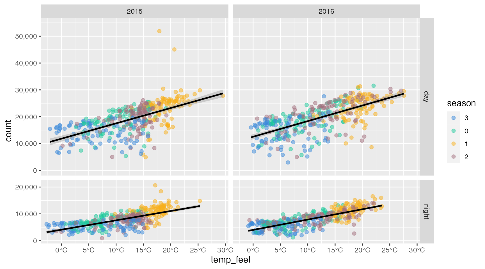

Chapter 4 A Walk-through Example
To illustrate the utility and flexibility of ggplot2 to create complex, well-designed visualizations with a handful of components, we are going to create a set of four plots. For each combination of year and time of the day, we draw a scatter plot of bike rents including a linear fitting to show overall trends with feels-like temperature.
The creation of the plot itself will require only four lines of code! One to specify the data and global aesthetics, two for the scatter and fitting, and another one to create small multiples.
With a few more lines of code, we will adjust the labels, add annotations, and apply a custom color palette. Finally, we apply a personalized theme using custom typefaces.
4.1 Prerequisites
Before we can create a ggplot, we have to load the package by running library(ggplot2). Also, we need import the data set we want to visualize, here our bike share data introduced in Section 3.1 which we store in an object called bikes.
## load the ggplot2 package
library(ggplot2)
## import bikes data set
url_data <- "https://cedricscherer.com/data/london-bikes.csv"
bikes <- readr::read_csv(file = url_data, col_types = "Dcfffilllddddfc")4.2 Create a basic ggplot
Once the ggplot2 package is loaded, we can create a basic ggplot by specifying the data, aesthetics—the positional encoding of the variables—, and a geometry.
Here, we map the variable temp_feel of our bikes data object to the x position and the variable count to the y position (4.1). We will also map variables to all kind of other aesthetics throughout the book. Some are related to positions such as xmin or yend while others change the appearance of the layer based on the variables they are mapped to such as color and shape.
There are many, many different geometries (often called geoms because each function starts with geom_) one can add to a ggplot by default and even more provided by extension packages. By adding geom_point() we create a scatter plot:
ggplot(data = bikes) + ## initial call + data
aes(x = temp_feel, y = count) + ## aesthetics
geom_point() ## geometric layerFIGURE 4.1: A basic scatter plot of feels-like temperature and reported TfL bike rents, created with the {ggplot2} package.
In most cases, you will find ggplot code in which the aesthetics are supplied inside the ggplot() call; however, both versions are valid.
ggplot(data = bikes, mapping = aes(x = temp_feel, y = count)) +
geom_point()
Due to so-called implicit matching, we can rewrite the first part as ggplot(bikes, aes(date, count)), omitting the argument names data and mapping in the ggplot() call and x and y in the aes() function. This works as long as we respect the defined order.
Omitting the arguments data and mapping saves you a ton of typing when creating dozens to hundreds ggplots per day. In my opinion, it is good practice to refer to aesthetics explicitly, and I will follow this convention throughout the book.
4.3 Combine multiple layers
One can also add several layers, specified as either geometric shapes starting with geom*() or statistical transformations starting with stat_*() (4.2)—and this is where the magic and fun starts!
ggplot(bikes, aes(x = temp_feel, y = count)) +
geom_point() +
## add a GAM smoothing
stat_smooth()FIGURE 4.2: The same scatter plot, now with an additional GAM smoothing.
Both geom_*() and stat_*() internally make use of the same function layer() and pass default inputs for the geom, stat, and position arguments. Basically the use of geoms versus stats is only the perspective and personal preference: when specifying geom_*() we focus on the shape representing the variables; using stat_*() highlights the transformation applied to the variables. More information on the different geometries is provided in Chapter XYZ and a deep-dive into the power of statistical transformation is Chapter XYZ.
4.4 Mapping aesthetics in layers
By looking at these scatter plots, we can actually identify two different trends for day and night. We can highlight both groups by mapping the day_night variable to color (Fig. 4.3). Note that the mapping is applied to both, geom_point() and geom_smooth() and consequently the latter layer creates two separate smoothings.
ggplot(bikes, aes(x = temp_feel, y = count, color = day_night)) +
geom_point() +
stat_smooth()FIGURE 4.3: The points and smoothing lines colored by the time of the day.
Aesthetics can also be defined for each layer and are then applied locally to the respective geometry or statistical transformation only. The group aesthetics allows to create subsets without changing the visual appearance (in contrast to aesthetics such as color or shape).
You will learn more how to work with global and local aesthetics in Chapter XYZ and how to modify their appearance in Chapter XYZ.
4.5 Setting properties in layers
Furthermore, each layer has its own arguments to change their behavior and appearance. Let’s also add some transparency to the points and turn the smoothing into a linear fitting (Fig. 4.4). As we are not mapping aesthetics but setting properties, we have to place those adjustments outside the aes() call.
ggplot(bikes, aes(x = temp_feel, y = count)) +
geom_point(
## color mapping only applied to points
aes(color = day_night),
## setting larger points with 50% opacity
alpha = .5, size = 2
) +
stat_smooth(
## invisible grouping to create two trend lines
aes(group = day_night),
## use linear fitting + black smoothing lines
method = "lm", color = "black"
)FIGURE 4.4: We can map aesthetics and define properties for each layer individually.
In general follow the rule to set constant properties outside aes() and map variables to aesthetics inside aes().
The different aesthetics and the differences of global versus local mapping of aesthetics is explained in Chapter XYZ.
4.6 Create small multiples
A fantastic feature of ggplot2 is it’s ability to quickly split a single visualization in a set of so-called small multiples: the same visualization, no matter how complex it is, is applied to subsets contained in the same data set. In ggplot2, such small multiples are called facets wich are conditional on the variables defined in the facet_*() function (Fig. 4.5).
ggplot(bikes, aes(x = temp_feel, y = count)) +
geom_point(
aes(color = day_night), alpha = .5, size = 2
) +
stat_smooth(
aes(group = day_night), method = "lm", color = "black"
) +
## small multiples based on time of the day (rows) and year (columns)
facet_grid(day_night ~ year)
FIGURE 4.5: With the facet functions, a visualization can quickly be split into small multiples.
Consistency across axes is considered good practice as varying axis ranges are harder to compare and the potential of misleading viewers increases in case the differences keep unnoticed—or even worse are not noticeable. The implementation of facet in ggplot2 ensures consistency across all small multiples by default, as illustrated by the empty space in the lower row as there are no values above ~21,000 reported rents during night.
The facet functionality also comes with the option to overwrite the default behavior by “freeing” the positional scales. Furthermore, one can ensure equal axis spacing by freeing the space as well (Fig. 4.6). This setting allows to efficiently use the available space while ensuring comparability across plots and decreasing the potential of misleading the viewer. The differences between the two ways to create small multiples, namely facet_grid() and facet_wrap(), as well as ways to adjust and annotate facets are explained in Chapter XYZ.
ggplot(bikes, aes(x = temp_feel, y = count)) +
geom_point(
aes(color = day_night), alpha = .5, size = 2
) +
stat_smooth(
aes(group = day_night), method = "lm", color = "black"
) +
facet_grid(
## free y axis range + scale heights respectively
day_night ~ year, scales = "free_y", space = "free_y"
)FIGURE 4.6: {ggplot2} even allows to free the axis range—while ensuring equal axis spacing.
4.7 Change the axis scaling
For every aesthetic, ggplot2 applies so-called scales that translate between variable ranges (data) and property ranges (aesthetic). For the positional axes, a set of scale_x_*() and scale_y_*() controls their behavior. The breaks argument defines the placement of the axes ticks while the labels argument controls the labels next to those ticks. The labels can be either overwritten by a vector of the same length as the breaks (as for x in our example) or a function that returns a vector based on the breaks (as for y in our example). There are many more arguments such as expand to control the padding towards the ends of the respective axis or trans to transform the scale. You can read more about how to control scales in Chapter XYZ and about label adjustment and styling in Chapter XYZ.
ggplot(bikes, aes(x = temp_feel, y = count)) +
geom_point(
aes(color = season), alpha = .5, size = 2
) +
stat_smooth(
aes(group = day_night), method = "lm", color = "black"
) +
facet_grid(
day_night ~ year, scales = "free_y", space = "free_y"
) +
## x axis: add °C symbol + 5°C spacing
scale_x_continuous(
breaks = -1:6*5, labels = function(x) paste0(x, "°C"), expand = c(mult = 0, add = 1)
) +
## y axis: add a thousand separator + consistent spacing across rows
scale_y_continuous(
breaks = 0:5*10000, labels = scales::label_comma(), expand = c(mult = .1, add = 0)
)
FIGURE 4.7: To adjust the formatting of axis labels, the respective axis needs to be addressed via the scale_*() functions.
4.8 Use a custom color palette
The scales do not only control the behavior of the axes but also all other aesthetics such as color, shape or alpha. In case of categorical colors, scale_color_manual() enables us to overwrite the default color set by passing a vector of colors.
g1 <- ggplot(bikes, aes(x = temp_feel, y = count)) +
geom_point(
aes(color = season), alpha = .5, size = 2
) +
stat_smooth(
aes(group = day_night), method = "lm", color = "black"
) +
facet_grid(
day_night ~ year, scales = "free_y", space = "free_y"
) +
scale_x_continuous(
breaks = -1:6*5, labels = function(x) paste0(x, "°C"), expand = c(mult = 0, add = 1)
) +
scale_y_continuous(
breaks = 0:5*10000, labels = scales::label_comma(), expand = c(mult = .1, add = 0)
) +
## use a custom color palette for season colors
scale_color_manual(
values = c("#3c89d9", "#1ec99b", "#F7B01B", "#a26e7c")
)
g1
The colors will be applied in order, i.e. the levels of the factor or alphabetical in case of character variables. To ensure correct mapping, one can also use a named vector.
You will learn more about the different color and fill scales and how to manipulate colors in Chapter XYZ. The chapter also features an example how to create a corporate color or fill scale to ensure consistent color use.
Furthermore, we are storing the current plot in an object named g1. This ggplot object can be extended afterwards. Storing intermediate ggplot outputs is especially helpful if the code becomes rather long and in case you have multiple variants of the same chart, for example when building up a chart stepwise. Another common use case is the creation of graphics in multiple languages.
4.9 Adjust labels
For now, we have ignored that ggplot2 uses the variable names as specified in our bikes object for data-related labels. Resist the temptation to change the variable names in your original data set! We can easily overwrite those by referring to the respective aesthetic (x, y, and color) in the labs() function which we add to our plot. Here, we can also specify a title, subtitle, caption, and tag (subtitle and tag are not shown in the following example; Fig. 4.8).
g2 <- g1 +
labs(
## overwrite axis and legend titles
x = "Average Feels-Like Temperature", y = NULL, color = NULL,
## add plot title and caption
title = "Trends of reported bike rents versus feels-like temperature in London.",
caption = "Data: TfL (Transport for London), Jan 2015–Dec 2016"
)
g2
FIGURE 4.8: We can overwrite the default labels with the labs() which also allows to add a title, subtitle, caption, and tag to the graphic.
Let’s also overwrite the cryptic numeric encoding of the seasons. Similar to the positional scales, we can pass a vector or function to the labels argument in the scale_color_*() component:
g3 <- g2 +
scale_color_manual(
values = c("#3c89d9", "#1ec99b", "#F7B01B", "#a26e7c"),
labels = c("Winter", "Spring", "Summer", "Autumn")
)
g3
FIGURE 4.9: By passing a vector of the same length as there are seasons to the labels argument of the scale_color_*() function, we can overwrite the labels used in the legend.
Note that the code is returning a message informing you that the present color scale has been replaced. As you can only apply one scale per aesthetic, we also have to pass the color vector again to use the custom colors from before.
4.10 Apply a complete theme
ggplot2 comes with a set of so-called complete themes. We can add one of these to overwrite the default theme_grey() by one of the others (run ?theme_grey for a full list of available complete themes).
When adding a theme to a ggplot, we can already overwrite the base_size of the theme elements, which translates to the size of text labels and line widths. Furthermore, we can set a non-default typeface by supplying a locally installed typeface in the base_family argument.
g3 +
## add theme with a custom font + larger element sizes
theme_light(
base_size = 12, base_family = "Spline Sans"
)FIGURE 4.10: The graphic now comes with a new look and a non-default font used for all text labels.
4.11 Customize the theme
The complete themes follow a set of rules that overwrite the choices made for the default theme_grey(). By using a theme() call after (!) adding a complete theme, one can adjust the appearance of single elements (e.g. plot.title or panel.grid.major.x) as well as set some pre-set options such as the positions of titles, captions and legends (plot.title.position, plot.caption.position and legend.position).
In general, theme elements can be of class text (e.g. plot.title), line (e.g. panel.grid.major.x), or rectangle (e.g. panel.background). In addition, we can use element_blank() to remove an element entirely as set for panel.grid.minor in our example.
g3 +
theme_light(
base_size = 12, base_family = "Spline Sans"
) +
## theme adjustments
theme(
plot.title.position = "plot", ## left-align title
plot.caption.position = "plot", ## right-align title
plot.title = element_text(face = "bold", size = rel(1.3)), ## larger bold title
axis.text = element_text(family = "Spline Sans Mono"), ## monospaced font for axes
axis.title.x = element_text( ## left-aligned, grey x axis label
hjust = 0, color = "grey30", margin = margin(t = 12)
),
strip.text = element_text( ## larger bold facet labels
face = "bold", size = rel(1.15)
),
panel.grid.major.x = element_blank(), ## no vertical grid lines
panel.grid.minor = element_blank(), ## no minor grid lines
legend.position = "top", ## place legend above plot
legend.text = element_text(size = rel(1)) ## larger legend labels
)FIGURE 4.11: After applying on of the complete themes, one can further style the theme to the personal needs.
The book covers themes in full detail in Chapter XYZ. Here you learn how to leverage complete themes, which other complete themes are provided by extension packages, and how to create your own custom, corporate theme to apply a cohesive and easily reproducible style to all of your graphics.
[WIP]
RECAP
LEAD OVER TO NEXT CHAPTER